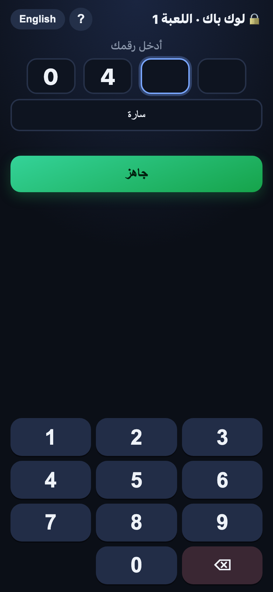
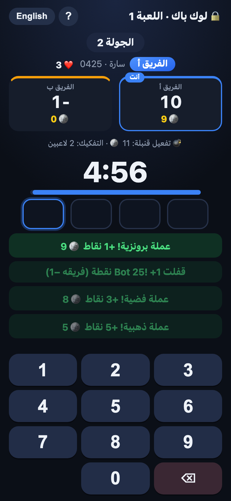
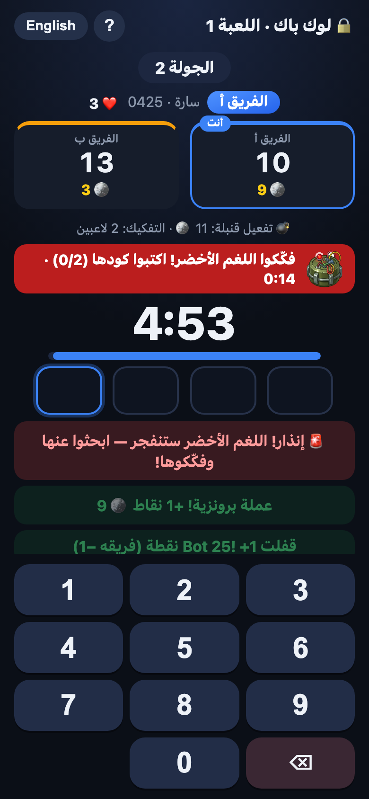
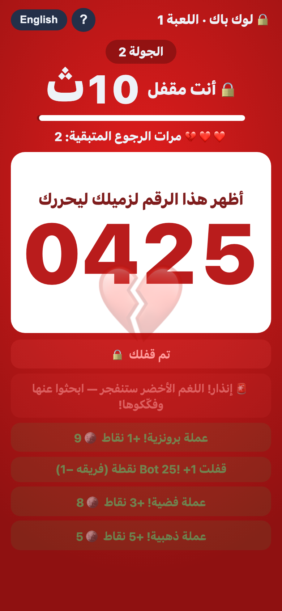
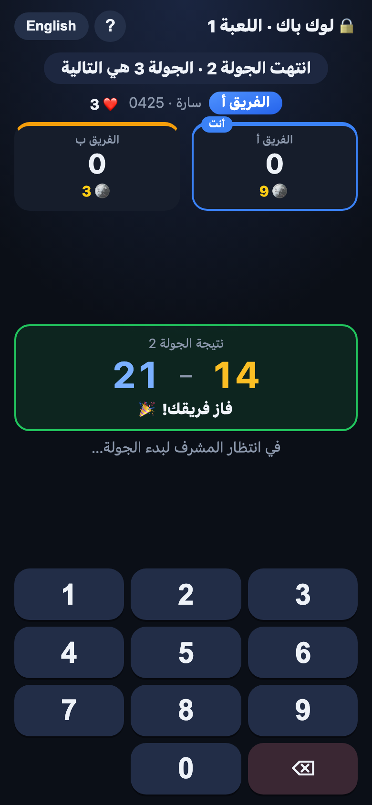
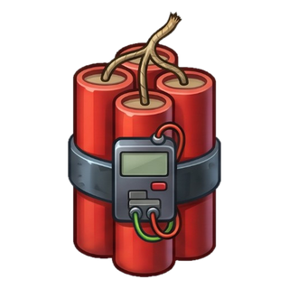

🔒 لوك باك — طريقة اللعب
اقفل الفريق الآخر. وحرّر فريقك.
قبل الجولة
1اتصل بشبكة الواي فاي
2امسح QR لعبتك (أو افتح رابطها)
3اكتب رقمك المكوّن من 4 أرقام (هو الذي يحدد فريقك) واسمك
4اضغط Ready
1

اكتب رقمك واضغط Ready2

الجولة تعمل: العملات والقفل تظهر كرسائل3

قنبلة مفعّلة ضد فريقك!4

مقفول: أرِ رقمك لتتحرر5

نتيجة الجولة⭐ سجّل نقاطاً
- رقم خصم → يُقفل. +1 نقطة (وفريقه −1)
- رقم زميل مقفول → تحرّره. +1 نقطة
⚠️ انتبه
- الخصم المقفول بالفعل لا يمكن قفله مرة أخرى — لا يحدث شيء.
- لا يمكنك كتابة نفس الرقم مرتين متتاليتين.
- كتابة رقمك أنت لا تفعل شيئاً.
- عندما تُقفل تتحول الشاشة للأحمر — أرِ رقمك لزميل ليحرّرك أسرع.
- لكل لاعب عدد محدود من مرات الرجوع في الجولة (❤️ على شاشتك). وإذا انتهت تخرج حتى الجولة التالية.
🏆 نهاية الجولة
- الفريق صاحب النقاط الأكثر يفوز بالجولة.
- تبدأ النقاط من 0 في الجولة التالية.
- تُحسب الجولات الفائزة حتى يعيد المشرف ضبط اللعبة.
🪙 العملات
- عملات مطبوعة مخبأة في أماكن مختلفة. لكل عملة رقم من 4 أرقام: اكتبه مثل رقم اللاعب.
- الذهبية +5 نقاط (انتظار 30 ث) · الفضية +3 (20 ث) · البرونزية +1 (10 ث).
- الانتظار لكل لاعب: لا تأخذ نفس العملة إلا بعد انتهائه.
- عملات فريقك (الذهبية = 5 والفضية = 3) هي رصيد القنابل.

💣 القنابل
- أربع قنابل مخبأة أيضاً، لكل منها رقمها. اكتبه لتفعّلها ضد الفريق الآخر — وتكلّف عملات (تظهر على شاشتك).
- بعد 15 ثانية تنفجر وتقفل بعض لاعبيهم.
- قنبلة ضد فريقك؟ إنذار أحمر بصورتها: ابحثوا عنها واكتبوا رقمها. يجب أن يكتبه عدد كافٍ من زملاء مختلفين في الوقت لتفكيكها (+3).




❓ اضغط ? أعلى شاشتك في أي وقت لقراءة هذه التعليمات.